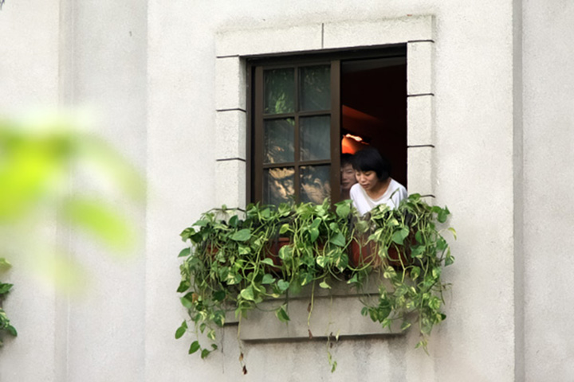

去过天津的五大道，青岛的八大关，即使在季节不太好的时候，也有成群结队的游人。我们穿过上下九来到沙面的时候，和刚刚上下九的人潮拥挤正好相反，要不是沿街开始出现几栋西式的老楼，游人少得都差点没意识到这就是沙面了。


逛青岛八大关是在清明，那时的青岛还很冷，房子上挂着满墙黑色干枯的爬山虎，路上的树都只剩光秃的树枝，建筑本身再美，但始终少了些韵味。去五大道是在五月，天气还不错，只可惜天津的天跟北京一样，常常都是灰蒙蒙的，我们去的时候也一样。五大道整体面积挺大，相互之间走起来有些距离，逛起来就没有那么休闲了，更像是暴走。

沙面不算大，逛起来很休闲，你更愿意慢下脚步，甚至停下来，在街中间的小花园坐下，感受穿过叶子撒下的阳光，感受周围的静谧和安逸。逛沙面，你会感慨还是在阳光，宽大稀疏的树影和极富层次的绿意中，这些古老的西洋建筑才能真正体现出它的美来。

穿过沙面的洋楼区，就是珠江边的沙面公园了，高架公路从公园上空穿过，公园的大树攀在公路两边，成了天然的防护网和隔音墙。趴在江边的护栏上，看珠江在脚下拐了个弯，迎面是一月江上温凉湿润的风。突然有些小感动，这就是南方，是我们接下来要生活的地方，看来我们的选择没有错。